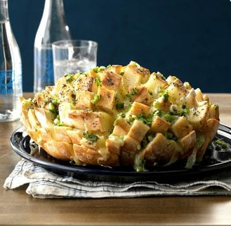

It’s impossible to stop nibbling on warm pieces of this cheesy, oniony bread. The sliced loaf fans out for a fun presentation. It’s one of the best savory appetizers I’ve found. —Kay Daly, Raleigh, North Carolina